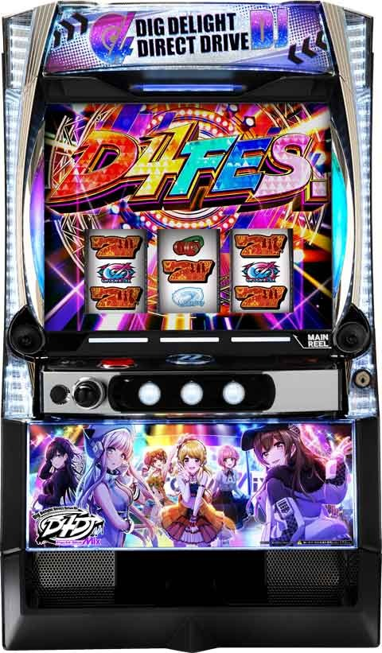
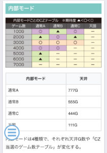
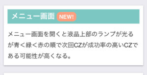
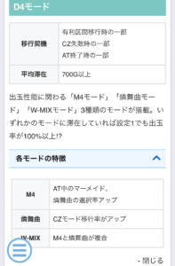
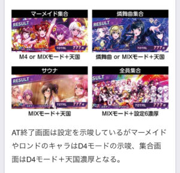

L D4DJ

【天井情報】
777G+α AT当選
【リセット判別】
不明
【有利区間について】
差枚+2200枚でグルービードリームチャンスに突入
狙い目
【リセット狙い】
320Gから
【AT間天井狙い】
350Gから
【上位CZ狙い】
メニュー画面開いた時に上部LEDが赤だと、次回上位のCZ？
単体で打てそう？
緑は少しボーダー下げれそう。
青は調整なし。
【有利区間切れ狙い】
差枚+1800枚以上 270Gから
※どこで有利切れるのかハッキリしないため現状狙えるか不明。
やめ時
終了画面が、マーメイド集合、燐舞曲集合、サウナはD4モード+天国濃厚のため続行。
その他
内部モード

メニュー画面

D4モード

AT終了画面

参考元
基本情報
- メーカー: 京楽
- 機械割: 97.6% 〜 114.9%
- 導入開始日: 2024年08月05日（月）
- ゲーム性概要: 通常時はレア役とゲーム数消化（100Gごとの抽選）でCZを引き当てATを目指すゲーム性。AT「D4フェス」は純増約1.3枚、30G＋αのセット管理型で、消化中はセット継続（Vストック）を抽選する。セットごとに抽選されるユニットによってATのゲーム性が変化するのが特徴だ。ボーナスとパーティータイム（ST）のループや、エンディング後のグルーミングチャンスなど、強力なトリガーを多数搭載している。


打ち方
打ち方・小役
打ち方（小役狙い）
［最初に狙う絵柄］

左リール上段付近にピンクBARを目押し。中＆右リールはフリー打ちでOKだ。
［ディスクの停止形］

斜め揃いのディスクでも目押し位置によって強ディスクの可能性もある。
変則押しはNG

通常時のナビ非発生時は左1stでの消化を推奨だ。
解析情報通常時
小役関連
小役確率
| 役 | 確率 |
|---|---|
| リプレイ | 1/9.8 |
| ベル | 1/22.4 |
| チェリー | 1/54.7 |
| 弱ディスク | 1/99.9 |
| 強ディスク | 1/336.1 |
| 押し順ディスク | 1/170.9 |
※ディスク合算は1/53.1、レア役合算は1/26.9
小役確率は全設定共通だ。
CZ当選率
| 役 | 低確滞在時 | 通常滞在時 | 高確滞在時 |
|---|---|---|---|
| その他 | － | － | 0.4% |
| リプレイ | 0.4% | 0.8% | 3.1% |
| チェリー | 0.8% | 1.6% | 9.8% |
| ディスク | 35.9% | 50.0% | 59.8% |
| 強ディスク | 70.3% | 75.0% | 80.1% |
契機役ごとのCZ当選率は全設定共通だ。
内部状態関連
内部状態概要
通常時には低確・通常・高確の3種類があり、CZ当選率が変化。状態はおもにディスクとチェリーで移行して、高確移行時は10Gの保証ゲーム数がある。
内部状態
| 項目 | 内容 |
|---|---|
| 移行契機 | ディスク・チェリー成立時の抽選、 有利区間移行時、AT終了時 |
| 内部状態の種類 | 低確＜通常＜高確 |
| 高確移行時の保証ゲーム数 | 10G |
レア役時の内部状態アップ期待度序列
| 役 | 期待度 |
|---|---|
| 弱ディスク | 低 |
| チェリー | ↓ |
| 強ディスク | 高 |
［低確滞在時］内部状態移行率
| 役 | 移行率 |
|---|---|
| リプレイ | － |
| ハズレ（1枚）・ベル | まれに通常へ昇格 |
| チェリー | 40%以上で通常以上へ、 昇格時の約40%高確へ（約16%で高確） |
| ディスク | 約20%で通常以上へ |
| 強ディスク | 約70%で通常以上へ |
［通常滞在時］内部状態移行率
| 役 | 移行率 |
|---|---|
| リプレイ | 約25%で低確へ転落 |
| ハズレ（1枚）・ベル | － |
| チェリー | 約20%で高確へ |
| ディスク | 約10%で高確へ |
| 強ディスク | 約50%で高確へ |
［高確滞在時］内部状態移行率
| 役 | 移行率 |
|---|---|
| リプレイ | 約25%で通常へ転落 |
モード
通常モード
通常時は4種類のモードでゲーム数天井（AT当選）とCZ当選のゲーム数テーブルが変化。 モードは有利区間移行時とAT終了時に抽選される。
通常モードごとの天井（天井でAT当選）
| モード | 天井ゲーム数 |
|---|---|
| 通常A | 777G |
| 通常B | 555G |
| 通常C | 444G |
| 天国 | 111G |
通常モードごとのCZ当選テーブル
| ゲーム数 | 通常A | 通常B | 通常C | 天国 |
|---|---|---|---|---|
| 100G | ◎ | △ | ◎ | － |
| 200G | △ | ◎ | △ | － |
| 300G | ◯ | ◯ | ◯ | － |
| 400G | ◎ | ◎ | － | － |
| 500G | △ | － | － | － |
| 600G | △ | － | － | － |
| 700G | － | － | － | － |
DDC連モード
成立役不問で毎ゲーム 約1/19.7 でCZを抽選するモードで、突入時は最低20G継続。20G消化後はリプレイで転落を抽選する。 ショート＜ミドル＜ロングの順で転落率が低い（ロング継続しやすい）。
DDC連モードの性能
| 項目 | 内容 |
|---|---|
| 移行契機 | CZ失敗後、AT終了後の一部 |
| 滞在中のCZ確率 | 1/19.7 |
| 保証ゲーム数 | 20G |
| その他 | 保証ゲーム終了後のリプレイで転落抽選 |
リプレイ時のDDC連モード維持・転落振り分け
| DDC連モード | 維持 | 転落 |
|---|---|---|
| ショート | 50.00% | 50.00% |
| ミドル | 81.25% | 18.75% |
| ロング | 89.84% | 10.16% |
D4モード（M4・燐舞曲・W-MIX）
有利区間移行時（設定変更後含む）やCZ・AT終了後に突入する可能性がある3種類の特殊モード。平均700G継続して、滞在中はAT性能や初当り確率が優遇される（機械割は設定1でも100%以上）。
D4モードごとの特徴
| D4モード | 特徴 |
|---|---|
| M4モード | AT中のマーメイド、輪舞曲の選択率がアップ！ |
| 燐舞曲モード | DDC連モード移行率アップ |
| W-MIXモード | 上記の2つが複合したモード |
CZ共通
CZ当選率
CZはおもにディスクとゲーム数消化（100Gごと）で抽選。低確中でもディスク成立時のCZ当選率は 約36% と高い。
CZ当選率
| 設定 | 確率 |
|---|---|
| 1 | 1/112.2 |
| 2 | 1/110.9 |
| 3 | 1/109.6 |
| 4 | 1/104.4 |
| 5 | 1/103.6 |
| 6 | 1/99.9 |
ディグディライトチャンス（CZ）
ディグディライトチャンス概要

6G間のST型CZで、小役を引けばゲーム数が再セット。4回継続させればAT濃厚だ。
ディグディライトチャンス性能
| 項目 | 内容 |
|---|---|
| 継続ゲーム数 | 6GのSTタイプ |
| 消化中の抽選 | 小役を引けばST再セット |
| 平均成功期待度 | 約30% |
| その他 | 特定役による一発成功抽選もあり |
［6Gをタイマー形式に表示］

ダイレクトドライブチャンス（CZ）
ダイレクトドライブチャンス概要

狙えカットインが3回発生するまで継続するCZで、BARを揃えることができればAT濃厚となる。
ダイレクトドライブチャンス性能
| 項目 | 内容 |
|---|---|
| 継続ゲーム数 | 狙えカットイン3回発生まで |
| 消化中の抽選 | 狙えカットイン、小役によるホールド抽選 ※ホールド中はカットイン回数の減算ストップ |
| 平均成功期待度 | 約40% |
| その他 | 32G間消化すればAT濃厚 |
［カットインの回数をダルマ落とし形式に表示］

D4DJチャンス（上位CZ）
D4DJチャンス概要

10G間のフリーズ高確率で、リプレイ成立時の約50%で成功。レア役は成功濃厚だ。
D4DJチャンス性能
| 項目 | 内容 |
|---|---|
| 継続ゲーム数 | 10G |
| 消化中の抽選 | フリーズ発生を抽選 ※リプレイで約50%、レア役は100% |
| 平均成功期待度 | 約70% |
［毎ゲームフリーズを抽選］

D4DJチャンスプレミアム（確定CZ）
D4DJチャンスプレミアム概要

ゲーム性はD4DJチャンスと同じだが、こちらは突入した時点でAT濃厚。成功すればパーティータイム（ボーナスの高確率ゾーン）を獲得できる。
D4DJチャンスプレミアム性能
| 項目 | 内容 |
|---|---|
| 継続ゲーム数 | 10G |
| 消化中の抽選 | フリーズ発生を抽選 ※リプレイで約50%、レア役は100% |
| 平均成功期待度 | 約70％（パーティータイム獲得） ※失敗してもATは確定 |
システム解説
初当り契機一覧
| 契機 | 詳細 |
|---|---|
| 小役によるCZ抽選 | ● 成立役と内部状態に応じて抽選、 ● チェリーで内部状態を上げてディスクでCZを当てるのが王道 |
| ゲーム数によるCZ抽選 | ● 通常モードに応じて100G消化ごとに抽選 |
| DDC連モードによるCZ抽選 | ● DDC連モードに応じて、成立役不問で毎ゲームCZを抽選 |
| AT直撃抽選 | ● AT直撃を抽選 |
| 天井到達（AT当選） | ● 111G・444G・555G・777Gの4箇所 ● 天井は通常モードによって変化 |
演出動画
ロングフリーズ
ボーナスを平均5個ストックできる特化ゾーン「グルービードリーム」直行の激アツ演出！
解析情報ボーナス時
ロードトゥD4フェス（初当り時のボーナス）
ロードトゥD4フェス概要

AT初当り時に経由するボーナスで、消化中はATのVストックを抽選する。
ロードトゥD4フェス性能
| 項目 | 内容 |
|---|---|
| 継続ゲーム数 | 50枚獲得まで |
| 1Gあたりの純増 | 約4.3枚 |
| 消化中の抽選 | ATのVストックを抽選 |
［ロードトゥD4フェス］Vストック当選率
| 役 | 当選率 |
|---|---|
| チェリー | 12.5% |
| ディスク | 50.0% |
| 強ディスク | 100% |

レア役でVストックを抽選。当選時はMAXベット押し時に告知される。
D4フェス（AT）
D4フェス概要

開始時に選択されたユニットによって抽選を含めた仕様が変化するセット管理型のAT。毎ゲームAT継続を抽選して、ゲーム数消化後のグルミクチャレンジ（2G）で継続の成否をジャッジする。 5セット継続ごとにフィナーレへ突入。フィナーレでは1〜4セットまでに登場したユニットの特性が複合するため、継続＋恩恵獲得の大チャンスとなる。
D4フェス（AT）性能
| 項目 | 内容 |
|---|---|
| 継続ゲーム数 | 30G＋α/セット |
| 1Gあたりの純増 | 約1.3枚 |
| 消化中の抽選 | Vストック （ユニットによって抽選が変化） |
| その他 | 5セット継続ごとにフィナーレに突入 |
ユニットごとの特徴
| ユニット | 特徴 |
|---|---|
| ハッピーアラウンド | ● ATが継続すればボーナスorパーティータイム |
| フォトンメイデン | ● ベルフリーズ発生率アップ ● ベルフリーズ発生でVストック |
| ピーキーピーキー | ● 響子カットイン発生率アップ ● 響子カットイン成功でゲーム数ホールド ● ホールド中はベルがフルナビ |
| リリカルリリー | ● デカリリ狙えカットイン発生率アップ ● デカリリ停止でVストック |
| マーメイド | ● ボーナスが必ずスーパーBIG ● パーティータイム中のボーナスもスーパーBIG |
| ロンド | ● 7揃い発生率アップ ● 7揃いでボーナスストック |
［ハッピーアラウンド］

［フォトンメイデン］

［ピーキーピーキー］

［リリカルリリー］

［マーメイド］

［ロンド］

［Vストック］

［フィナーレ］（5セット目）

〈フォトンメイデン〉ベルフリーズ発生率
| 役 | 当選率 |
|---|---|
| 押し順7枚ベル | 30.1% |
※ベルフリーズ発生でVストック獲得
押し順7枚ベルは中段or下段の平行ベル揃いだ。
〈ピーキーピーキー〉響子カットイン確率
| 発生 | 確率 |
|---|---|
| 響子カットイン | 約1/10 |
技術介入なので目押しに失敗するとホールドを獲得できないので注意（4コマ目押し）しよう。成功時は3or5or10Gのホールドを獲得。ホールド中はベルフリーズが抽選される。
〈リリカルリリー〉デカリリ狙え確率＆成功期待度
| 項目 | 抽選値 |
|---|---|
| 確率 | 約1/12 |
| 成功期待度 | 約33% |
〈ロンド〉7を狙え確率＆成功期待度
| 項目 | 抽選値 |
|---|---|
| 確率 | 1/13.6 |
| 成功期待度 | 63.2% |
7揃いは成立役に応じて抽選され、期待度序列はハズレ・ベル＜チェリー＜リプレイ＜ディスク＜強ディスク。リプレイでも約25%で7揃いとなる。
［ユニット不問］AT継続（Vストック）当選率
| 役 | 期待度 |
|---|---|
| その他 | 序列はハズレ・ベル＜リプレイ＜チェリー＜ディスク ※マーメイド時はリプレイでも約15% |
| ディスク | 約30% |
| 強ディスク | 約75% |
ユニット不問の継続当選率（Vストック獲得）は上記の通りで、レア役以外で当選した場合は大半がVストック告知されず、 グルミクチャレンジで継続が告知 される。 ユニットがマーメイドの時はほぼVストック告知が出ない（ほぼグルミクチャレンジでの告知になる）反面、告知された場合はパーティータイムorボーナス濃厚となる。
［ベルフリーズ］

［響子カットイン］

［デカリリを狙え］

［7を狙え］

ユニットレベル
AT中のユニットはD4モードだけでなく、AT当選時に決まるLow・Highという2段階のユニットレベルを参照して抽選される。
AT当選時のユニットレベル振り分け
| ユニットレベル | 振り分け |
|---|---|
| Low | 87.5% |
| High | 12.5% |
ユニットレベルごとのユニット振り分け
| 選択ユニット | Low滞在時 | High滞在時 |
|---|---|---|
| ハッピーアラウンド | 24.2% | 12.9% |
| フォトンメイデン | 22.3% | 21.9% |
| ピーキーピーキー | 24.2% | 21.9% |
| リリカルリリー | 16.8% | 21.9% |
| マーメイド | 8.2% | 12.5% |
| ロンド | 4.3% | 9.0% |
少枚数終了時のパーティータイム抽選
ATの最終ゲームでAT中の獲得枚数が「180枚以下」かつ非継続の場合にパーティータイムを抽選。当選時はパーティータイムを経由してATに復帰できる。 ちなみに獲得枚数は「ピーキーピーキーのホールド中に引いたベル」の枚数は含まないため、液晶上の表示枚数とズレる場合がある。
AT終了時の最終ゲーム・パーティータイム当選率
| 条件 | 当選率 |
|---|---|
| 180枚以下で終了かつ非継続 | 約28% |
グルミクチャレンジ
グルミクチャレンジ概要

2G間のAT継続ジャッジ区間。開始タイトルは紫がデフォルト、Vストック獲得後など、継続濃厚の状態では金タイトルが表示される。
［通常タイトル］

［金タイトル］

［グルミクチャレンジ］Vストック当選率
| 役 | 当選率 |
|---|---|
| チェリー | 12.5% |
| ディスク | 100% |
| 強ディスク | 100% |
継続はAT中にVストックを獲得していなかった場合にのみ抽選（Vストックを獲得しているかは基本的に見た目でわからない）。2G間のみだが、当選率はATの道中より大幅に高く、ディスクなら継続濃厚となる。
報酬振り分け
| 報酬 | 振り分け |
|---|---|
| AT継続のみ | 42.3% |
| パーティータイム | 37.7% |
| ボーナス | 20.0% |
※ユニットがハッピーアラウンドの場合はボーナスorパーティータイム濃厚
ボーナス（BIG・スーパーBIG）
BIG＆スーパーBIG概要

ST継続時の恩恵として獲得する可能性がある差枚数管理型の擬似ボーナスで、シングルラインならBIG、ダブルラインなら枚数の多いスーパーBIG。スーパーBIG開始時は開始時に発生するスクラッチチャンスで枚数を決定する。 消化中は パーティータイムのEXゲーム やATの Vストック を抽選する。
BIG/スーパーBIG性能
| 項目 | 内容 | |
|---|---|---|
| 獲得枚数 | BIG | 100枚 |
| 獲得枚数 | スーパーBIG | 150～1000枚 |
| 1Gあたりの純増 | 約4.3枚 | |
| 消化中の抽選 | EXゲーム上乗せ、Vストック 抽選 | |
| その他 | 終了後はパーティータイムへ |
［BIG］

［スーパーBIG］

［スクラッチチャンス］


音ゲー感覚で上乗せを楽しめる枚数告知。通常のBIG開始時に発生することもある。
［EXゲーム数上乗せ］

響子カットイン（サンド目を狙え）成功やレア役から獲得。ゲーム数は終了後のパーティータイムで使用する。
ボーナス当選時の振り分け
| ボーナス | 振り分け |
|---|---|
| BIG | 87.5% |
| スーパーBIG | 12.5% |
パーティータイム
パーティータイム概要

BIG（スーパーBIG含む）後に突入する10G間のSTで、BIG当選後は再度10Gからスタート。BIG中はパーティータイムのEXゲームを獲得する可能性があり、EXゲーム中に当選したBIGは必ずスーパーBIGになる。
パーティータイム性能
| 項目 | 内容 |
|---|---|
| 移行契機 | AT継続時の一部など |
| 継続ゲーム数 | 10GのSTタイプ |
| 消化中の抽選 | 全役でボーナスを抽選 ※ハズレ・ベル＜リプレイ＜チェリー＜ディスク |
| ボーナスループ率 | 50%or66%or80% |
ディスク成立時はボーナス濃厚！
ボーナス当選率
ボーナス期待度序列はハズレ・ベル＜リプレイ＜チェリー＜ディスクで、ディスクはボーナス濃厚。継続率が高いほどハズレやベルでのボーナス当選率やディスク当選確率がアップする。 最低継続率（50%）でも、リプレイのボーナス当選率は 約20% と高めだ。
［パーティータイム］ディスク確率
| ループ率 | ディスク確率 |
|---|---|
| 50% | 1/30.3 |
| 66% | 1/19.9 |
| 80% | 1/10.8 |
グルービードリームチャンス
グルービードリームチャンス概要

グルービードリーム（ボーナスストック特化ゾーン）をかけたCZで、エンディング後やボーナス当選時の一部で突入。 成功すればグルービードリームへ突入する。
グルービードリームチャンス性能
| 項目 | 内容 |
|---|---|
| 当選契機 | エンディング到達後など |
| 継続ゲーム数 | 10G |
| 消化中の抽選 | 全役で成功（パトランプ点灯）を抽選 ※リプレイで約50%、レア役は100% |
| 平均成功期待度 | 約70％（グルービードリーム当選） ※失敗してもATは確定 |
グルービードリーム
グルービードリーム概要

ボーナスの大量ストックに期待できる強力な特化ゾーンだ。
グルービードリーム性能
| 項目 | 内容 |
|---|---|
| 当選契機 | ボーナス当選時の一部、ロングフリーズ、 グルービードリームチャンス成功時 |
| 継続ゲーム数 | 10G＋α |
| 消化中の抽選 | 全役でボーナスストックを抽選 |
| ボーナス平均ストック | 5個 |
ツラヌキ・有利区間
ツラヌキ時の恩恵
| 項目 | 法則 |
|---|---|
| 条件 | エンディング到達後など |
| 恩恵 | グルービードリームチャンスへ突入 グルービードリームチャンス詳細はコチラ |
エンディング到達後はグルービードリームチャンスへ移行。グルービードリームチャンスを成功させればボーナス特化ゾーンのグルービードリームへ移行する。
演出情報
通常時
ステージ解説
CZやAT終了後は基本的に夕方ステージへ移行するが、昼ステージだった場合は高確以上濃厚。トワイライトステージへ移行した場合はDDC連モード濃厚だ。
［昼ステージ］

［夕方ステージ］

高確示唆。さらにトワイライトステージへ移行すれば高確の期待大だ。
楽曲SU

登場ユニットとSUの段階で成立役を示唆。ユニット不問でSU5まで行けばディスク濃厚だ。 さらに、SU５到達後にロングフリーズに発展する可能性がある。 SU2以上では第1停止時に別の演出が発生。この演出で登場するユニットとSUのユニットが違えば法則崩れでCZ濃厚だ（ユニット関連の演出でなかった場合は対象外）。
ユニットごとの法則
| ユニット | 法則 |
|---|---|
| ハッピーアラウンド | ハズレorベルorレア役 |
| フォトンメイデン | リプレイorレア役 |
| ピーキーピーキー | SU3以上濃厚 |
SUごとの法則
| SU | 法則 |
|---|---|
| SU3 | 小役以上 |
| SU4 | レア役以上 |
| SU5 | ディスク以上 |
D4フラッシュ

発生すればCZ期待度60%となる大チャンス演出。メニュー画面からのカスタムで発生率を変更することができる。 発生時は基本的に前兆ステージへ移行するが、移行しなかった場合はCZ濃厚となる。
にょちお演出
リールの下側に登場するにょちおは、ヒゲがあれば小役以上（ハズレでフェイク含む前兆）、マユゲ時はハズレorリプレイならCZ以上濃厚となる。
［ヒゲ］

［マユゲ］

バウンドストップ

バウンドストップは発生タイミングによって成立役が変化（法則崩れでCZ濃厚）。さらに、DDC連モード中は発生率がアップするため、頻発すればDDC連モード滞在に期待できる。
バウンドストップ発生タイミングごとの成立役
| タイミング | 示唆 |
|---|---|
| 第1停止時 | ハズレ・リプレイ |
| 第2停止時 | ベル |
| 第3停止時 | レア役（CZ濃厚） |
前兆
前兆ステージ

移行した時点でCZ以上期待度約40%。特定ユニットのBGMに変化すればCZ以上濃厚となる。
前兆ステージのユニット曲別示唆
| ユニット | 示唆 |
|---|---|
| リリカルリリー | CZ以上濃厚 |
| マーメイド | CZ以上濃厚かつM4モード滞在中の期待大 |
| ロンド | CZ以上濃厚かつ燐舞曲モード滞在中の期待大 |
D4フェス（AT）
AT終了画面のモード示唆
AT終了画面は設定だけでなくD4モードや天国モードを示唆するパターンもある。
AT終了画面のモード示唆
| 画面 | 示唆 |
|---|---|
| マーメイド | M4モード示唆 |
| ロンド | ロンドモード示唆 |
| マーメイド集合 | M4モードorMIXモード＋天国モード濃厚 |
| ロンド集合 | ロンドモードorMIXモード＋天国モード濃厚 |
| サウナ | MIXモード＋天国モード濃厚 |
| 全員集合 | MIXモード＋設定6濃厚 |
設定示唆画面はコチラ
［マーメイド］
［ロンド］
［マーメイド集合］
［ロンド集合］
［サウナ］
［全員集合］

［AT中］演出法則
| 演出 | 示唆 |
|---|---|
| 盛り上げコール演出 | ● 基本の対応役はハズレ ● フォトンメイデンの特性発動中は7枚ベル成立でベルフリーズ濃厚 ● ロンドの特性発動中はリプレイ成立で7揃い濃厚 |
| コール＆ レスポンス演出 | ● 基本の対応役はハズレ・ベル・レア役 ● リプレイが揃うと大チャンス!? |
| ハッピーアラウンド イントロ演出 | ● レア役以上濃厚 |
| フォトンメイデン トランジション演出 | ● レア役以上濃厚 |
| ピーキーピーキー アート演出 | ● レア役以上濃厚 |
| 強予告演出 | ● 発生した時点で大チャンス ● パーティータイム中はスーパーBIG濃厚 |
| 上空演出 | ● 打ち上がる文字で期待度示唆 ● パーティータイム中はリプレイ・チェリー対応 |
| 消灯演出 | ● 1消灯：ハズレ・リプレイ対応 ● 2消灯：ベル対応 ● 3消灯：ディスク対応 |
※対応役示唆は法則崩れで大チャンス
［盛り上げコール演出］

［コール＆レスポンス演出］

［ハッピーアラウンドイントロ演出］

［フォトンメイデントランジション演出］

［ピーキーピーキーアート演出］

［強予告演出］

リリカルリリーver。

マーメイドver。

ロンドver。
［上空演出］

※画像は一部を除き通常時のモノです（見た目は同じ）
エピソードごとのユニットレベル示唆
| ムービー | 示唆 |
|---|---|
| ハッピーアラウンド | デフォルト |
| フォトンメイデン | High濃厚 |
| ピーキーピーキー | High濃厚かつD4モード濃厚 ※W-MIXモードの期待大 |
ロードトゥD4フェスのエピソードでユニットレベルが示唆される。
［ハッピーアラウンド］

［フォトンメイデン］

［ピーキーピーキー］

裏ボタン
パーティータイムのループ率示唆

パーティータイム突入画面でPUSHボタンを押すと、液晶上部のランプが光って、ループ率を示唆。 色の序列は白＜青＜緑＜赤＜虹で、赤なら80%ループ濃厚、虹なら80％ループ＋ユニットレベルHigh濃厚となる。
ディスク成立時の当選CZ示唆

ディスクor強ディスク成立時は、第1停止〜第3停止後（次ゲームのレバーONまでの間）にPUSHボタンを押すと、液晶上部のランプで当選している可能性があるCZの種類を示唆することがある。
ランプ色ごとの当選CZ示唆
| 色 | 示唆 |
|---|---|
| 白 | ディグディライトチャンス以上 |
| 青 | ダイレクトドライブチャンス以上 |
| 緑 | D4DJチャンス以上 |
| 赤 | D4DJチャンスプレミアム以上 |
| 虹 | AT直行 |
CZ終了画面のD4モード示唆
CZ失敗時は、ボタンを押すとボイスでD4モードが示唆される。「マーメイド！」以上のボイス発生時はAT当選まで続行することをオススメだ。
CZ失敗時のPUSHボイス別示唆
| ボイス | 示唆 |
|---|---|
| 「ハッピーアラウンド！」 | デフォルト |
| 「フォトンメイデン！」 | デフォルト |
| 「ピーキーピーキー！」 | デフォルト |
| 「リリカルリリー！」 | D4モード滞在のチャンス |
| 「マーメイド！」 | M4モードの期待大 |
| 「ロンド！」 | 燐舞曲モードの期待大 |
| 「D4DJ！」 | D4モード濃厚かつW-MIXモードのチャンス |
その他
メニュー画面の次回CZ示唆

メニュー画面を開くと液晶上部のランプが光って、次回のCZの種類を示唆することがある。 色の序列は青＜緑＜赤で上位のCZが発生しやすい。